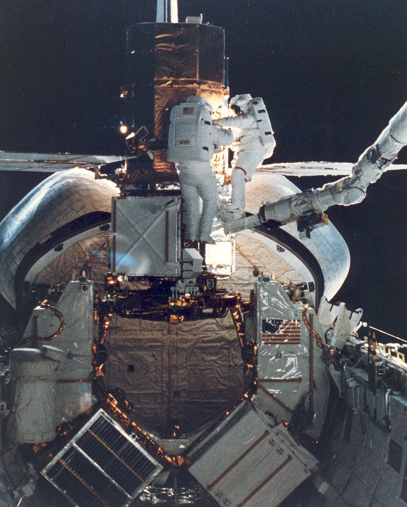
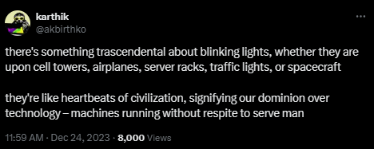

Hey Anons,
Strap in, because today we're diving deep into the abyss of what I've dubbed the "Delulu Doctrine." Oh, it's not just some fancy mindset; it's a full-on lifestyle. And let me tell you, it's as chaotic as a cat in a laser pointer factory.
So, here's my life in a nutshell: I've always been that guy, the one who goes all-in during exams, knowing everything yet sweating bullets at the thought of having messed it all up. Picture me, the night before results are out, curled up in bed, shivering like I'm in the server room at the NSA.
But then, this wild epiphany hit me What if being delusional isn't a flaw but a freaking superpower? Yeah, you heard right. Delulu is the solulu, my dudes.
Imagine this scenario: You walk into a room, totally convinced you're the king of the world. Sounds crazy? Maybe. But that insane level of confidence? It's like rocket fuel. While everyone else is busy doubting and hesitating, you're shooting off to Mars on a scooter made of pure swagger.
Now, I know what you're thinking. "But OP, my self-esteem has seen more bottoms than a chair repair shop." I totally get it. I've been there, doubted that. But guess what? Embracing your inner delulu means you never have to apologize for being awesome.
Let's get real for a second. I used to scoff at all that "unlock your potential" mumbo jumbo. I mean, if finding your potential was so easy, wouldn't we all be Olympic athletes or something? And yeah, there's the not-so-small issue of my... ahem... "diminished" attributes (wink wink).
But then it dawned on me. Being delusional is like having your own personal hype man living in your head. It's not about ignoring your flaws; it's about cranking up the volume on your virtues to eleven.
Enough about the philosophy of being delusional, let's talk action. How do you bring this into your daily grind? It's simple: channel that chaotic energy. Next time you feel like a nervous wreck, just remember: in some alternate universe, you're the lead guitarist for Dragonforce. Use that energy. Do something. Paint a painting. Write a blog. Start a conga line at your local retirement home. Whatever floats your boat.
And remember, every time you doubt yourself, somewhere a kitten fails its driving test. Don't be the reason kittens can't drive.
I'm not the chosen one. I wasn't bitten by a radioactive successful person as a child. But that's totally fine. We're in this together, fellow Anons. If we're gonna be delusional, we might as well do it as a team. Think of it as a multiplayer game where the goal is to out-delulu each other in the quest for greatness.
one of my fav tweets(sorry elon). look how far we have come.
So, what's the takeaway from all this rambling? Being delusional isn't about losing touch with reality—it's about choosing which version of reality you want to kick butt in. And if you're gonna be a madlad, you might as well be the maddest lad on the block.
Let's crank up the delulu and turn life into one big, glorious meme. After all, if life isn't about finding the best way to ride a unicycle blindfolded through a minefield, then what are we even doing?
Stay crazy, stay awesome, stay delulu.
Signing off, your favorite delusional anon
. -. -..